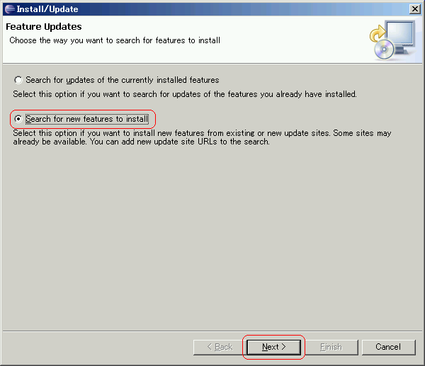

EclipseにSVNリポジトリにアクセスするためのSubclipseプラグインを追加します。
説明で使用する環境は下記の通りです。
| 項目 | 値 |
|---|---|
| OS | Windows XP Professional |
| Eclipse | 3.x |
上記バージョン以外の環境でも多くの場合、動作すると思われます。
EclipseにSubclipseプラグインを追加します。
新しいプラグイン定義を追加します。
追加したSubclipseを選択します。
インストールするプラグインを選択します。
ライセンスに同意できる場合は、同意するを選択します。
プラグインのインストール先を選択します。
ダウンロード中です。

プラグインにデジタル署名がされていない場合、インストールを続行するか確認されます。
インストール中です。
インストール後、再起動を求められるので再起動します。
以上でSubclipseのインストールは完了です。